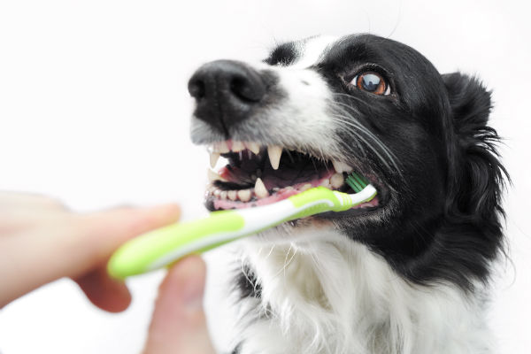
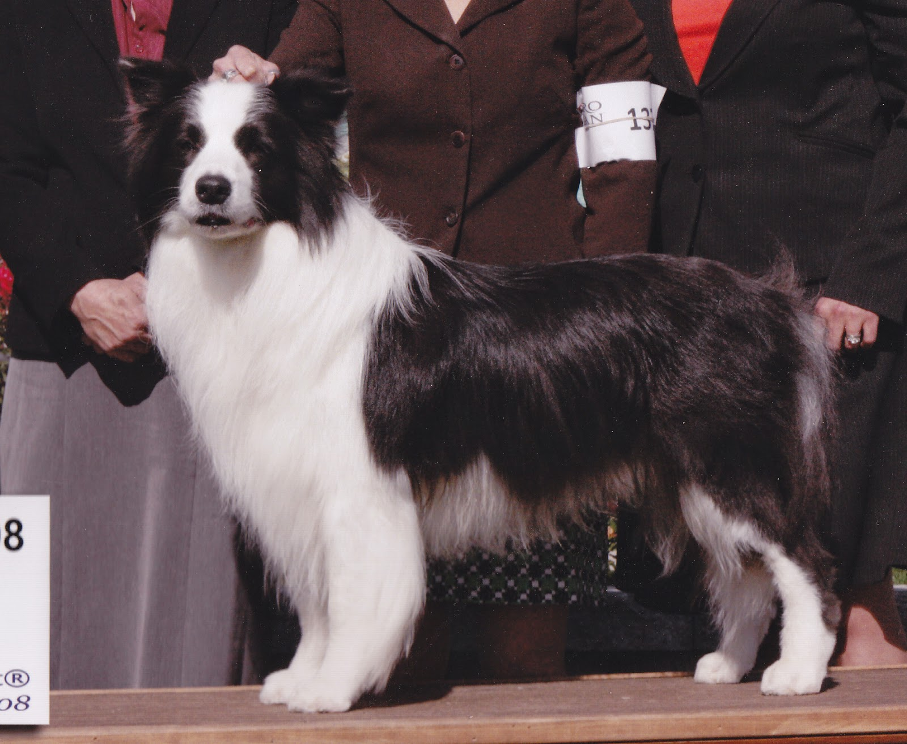
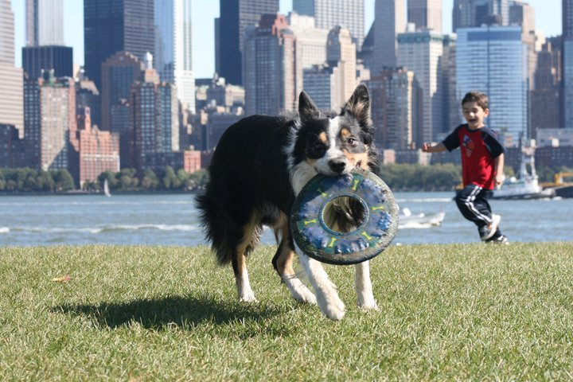
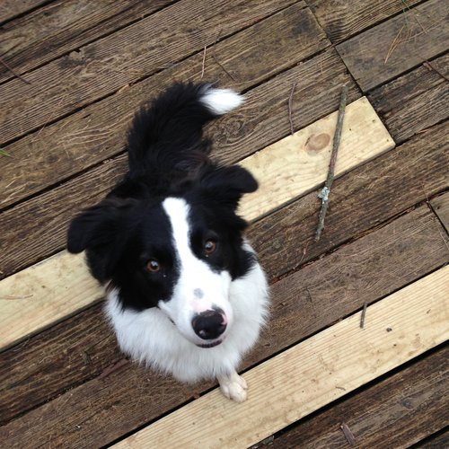
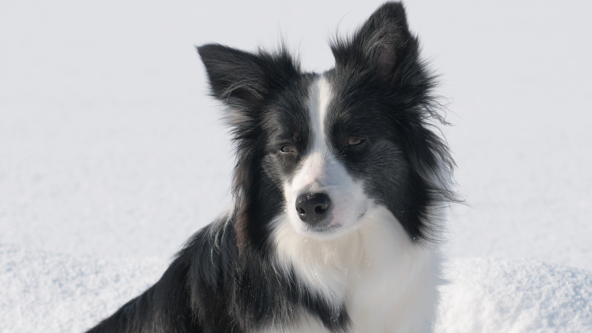
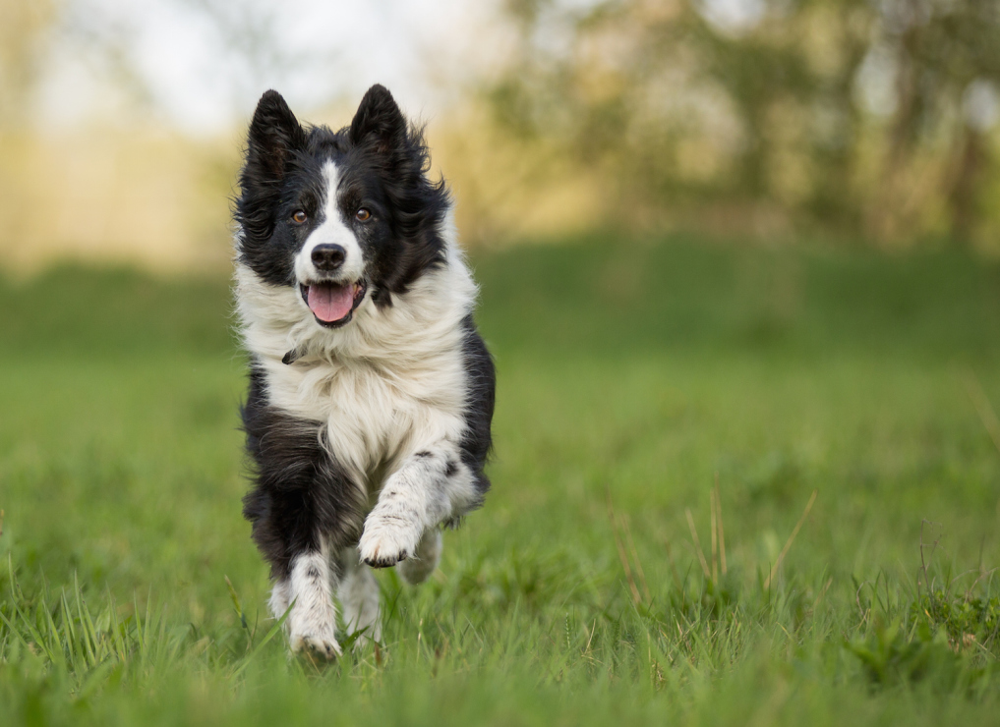
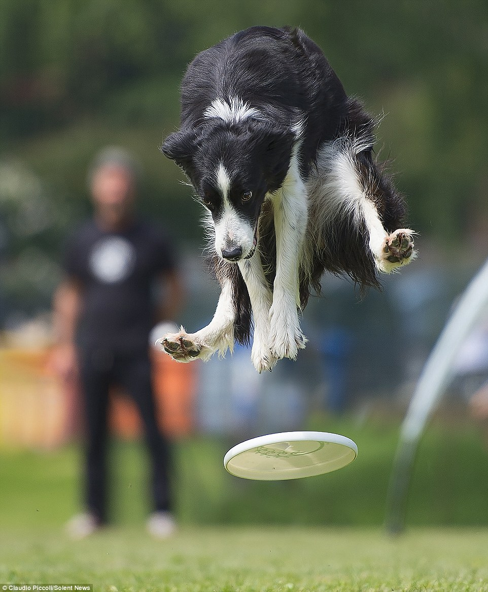
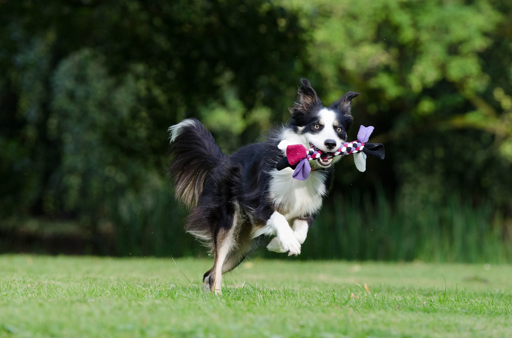

These are the sections that will be covered on this page:
|  |  |
Border collies have an easy-to-groom coat of fur. There are two types of fur that border collies may have: a short and smooth coat or a coarse and longer coat of fur. Both types are in double layers. A border collie's fur is often black with white tufts on the face‚ legs‚ feet‚ or its tail tip. Daily grooming isn't necessary‚ however weekly brushing to keep the coat oils healthy is recommended. Frequent brushing is recommended when shedding season comes around. Bathing for a border collie should be every four months as its fur gets dry the more you wash them.
A border collie's teeth need to be brushed at least two or three times a week to remove buildup of bacteria and tartar; however brushing everyday will keep border collie's teeth extremely healthy.
|  |  |  |
Border collies should have enough elbow room to live‚ since they have unlimited energy. Many people know border collies as dogs that chase sheep all day. They think collies belong in rural neighborhoods; however‚ that is not true: border collies can live in urban areas and can still have that 10 to 17 year life span. Border collies should be surrounded by tall fences‚ if they live in an urban setting‚ as they have really good jumping abilities. Border collies should also be in a quiet environment as they are super sensitive to sound. If herding sheeps isn't an option for the border collie‚ consider doing dog sports to drown its energy level faster‚ and to give them a perfect amount of exercise.
It is recommended that full grown border collies receive 1.5 to 2 cups of highly nutritious food per day‚ in which it is divided into two meals. An average male border collie weighs 14 to 20 kilograms‚ whereas a female collie weighs 12 to 19 kilograms‚ hence‚ looking at the chart above‚ the recommendations do match the average taking of food per day.
|  |  |  |
Border collies should get at least two hours of exercise per day. Collies should be involved in an activity that engages its mind as well as its body. Such examples could include agility course work&sbquo or herding sheep. Exercise helps improve their general health and reduces negative behaviours that may be extremely annoying.
Long runs should be avoided‚ even if the breed shows endurance. Border collies have been proved to have short bursts of speed and have a high chance of developing blisters on their feet. It is recommended that exercising border collies be done on soft surfaces such as grass.